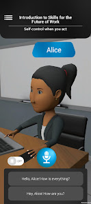
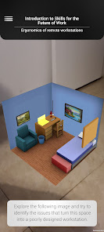
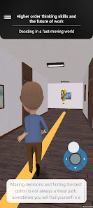

Yeltic LeARn


This is one of the many projects that I worked on during my time at Yeltic in Mexico City, and as far as I know, the only one publicly available.
In this company I had the role of Unity Developer, and thus my main tasks were programming functional modules for their apps
LeARn is an mobile interactive learning platform that uses AR and minigames to help people improve their hard and soft skills in the workplace. The experiences group in courses and those can be tailored to the needs of each company.
My contributions to this project were mainly:
-
Several interactive experiences
- Minigames
- Video with timed interactions
- AR experiences
- Clean integration of the above with the overall app
-
Base systems to build these and other interactive activites
- Messaging app simulator
- Interactive 360 video simulator
- In-house UI animation framework
- Push notification system using Firebase
The development continued and the app was released after my departure from the company, but you can learn more about it on their website.